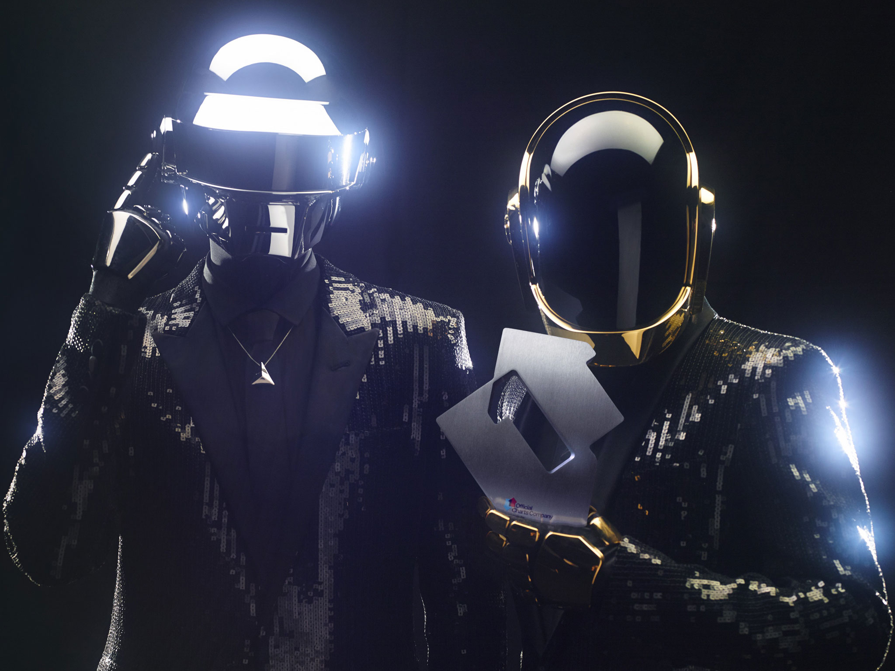

Home - Carreira - Top 5 - Videos - Albuns
No início de suas carreiras, os dois membros do Daft Punk integraram a banda Darlin', projeto influenciado pela sonoridade dos Beach Boys e Rolling Stones, mas rapidamente dissolvido. Guy-Manuel de Homem-Christo e Thomas Bangalter formaram então o Daft Punk, vindo a lançar em 1997 o seu aclamado álbum de estréia, Homework. Em 2001 foi lançado com ainda maior sucesso o segundo trabalho, Discovery, contendo os singles "One More Time", "Digital Love" e "Harder, Better, Faster, Stronger". Em março de 2005 a dupla lançou o álbum Human After All, e apesar de algumas críticas terem afirmado que o som era repetitivo, isso não impediu o sucesso dos hits "Robot Rock" e "Technologic" nos charts do Reino Unido. Em 2006, iniciaram uma turnê que se prolongou até 2007, originando o álbum ao vivo Alive 2007, que foi premiado com um Grammy na categoria "Melhor Álbum de música Eletrônica/Dance". A dupla compôs ainda a trilha sonora para o filme Tron: Legacy, que resultou no lançamento do álbum de mesmo nome em 2010.
Em 2013, a banda lançou o seu mais recente álbum, Random Access Memories. Deste destaca-se a música de maior sucesso,Get Lucky, uma parceria com o músico Pharrell Willliam, um êxito a nível mundial.
A dupla é reconhecida por apresentar elaborados shows ao vivo, nos quais os diversos elementos e efeitos visuais são incorporados em sincronia com as suas produções musicais, bem como por usarem trajes ornamentados com temas robóticos, tanto em público quanto no palco.
